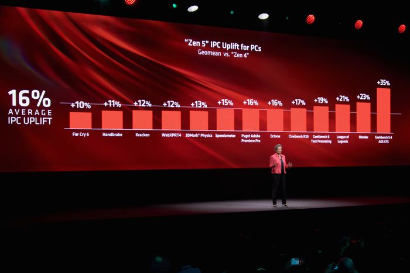

COMPUTEX 2024, AMD Ungkap Sejumlah Prosesor Generasi Berikutnya
AMD (Advanced Micro Devices) mengungkapkan sejumlah prosesor mendatangnya pada COMPUTEX 2024 di Taipei, Taiwan melalui keynote yang dilangsungkan pada 3 Juni 2024 lalu. Antara lain menggunakan arsitektur baru, para produk yang diungkapkan tersebut menawarkan peningkatan dibandingkan produk-produk saat ini dan akan hadir di pasar tidak lama lagi. Para prosesor itu adalah AMD Ryzen seri 9000, AMD Ryzen AI Generasi ke-3, dan AMD EPYC Generasi ke-5. Selain beberapa prosesor generasi berikutnya, AMD memberikan informasi pula mengenai sejumlah akselerator mendatangnya. Salah satu dari akselerator itu adalah AMD Instinct MI325X yang adalah GPU alias kartu grafis.
Seperti sebelumnya, AMD Ryzen seri 9000 dan AMD Ryzen AI Generasi ke-3 adalah untuk PC/klien, sedangkan AMD EPYC Generasi ke-5 adalah untuk server/pusat data. AMD Ryzen seri 9000 yang diungkapkan adalah yang untuk desktop dan memiliki codename AMD Granite Ridge, sedangkan AMD Ryzen AI Generasi ke-3 yang ditampilkan bisa dibilang lebih untuk laptop maupun 2 in 1 dan mempunyai codename AMD Strix Point. Sementara, AMD EPYC Generasi ke-5 yang diungkapkan memiliki codename AMD Turin. Adapun AMD Instinct MI325X ditujukan untuk server/pusat data dan bisa dibilang merupakan AMD Instinct MI300X dengan memori lokal lebih tinggi.
“AI adalah prioritas nomor satu kami dan kita berada pada awal masa yang sangat menarik bagi industri karena AI mentransformasi hampir setiap bisnis, meningkatkan kualitas hidup, dan membentuk ulang setiap bagian pasar komputasi. AMD secara unik diposisikan untuk menenagai infrastruktur dari ujung ke ujung yang akan menentukan era komputasi AI mulai dari server cloud besar dan klaster perusahaan hingga perangkat embedded cerdas dan PC berkemampuan AI generasi berikutnya,” ujar Dr. Lisa Su (Chair dan CEO Advanced Micro Devices) sembari menambahkan bahwa teknologi AMD ada di mana-mana dan menenagai kehidupan miliaran orang setiap hari.
Adapun salah satu strategi AMD untuk AI (artificial intelligence) yang dimaksud adalah menghadirkan portofolio produk komputasi dengan kinerja tinggi dan hemat energi sehingga bisa menjalankan AI secara optimal. Kehadiran sejumlah prosesor dan akselerator AMD mendatang yang diungkapkan pada COMPUTEX 2024 tentunya sejalan dengan itu. Seperti telah disebutkan sejumlah prosesor generasi berikutnya yang diungkapkan AMD pada COMPUTEX 2024 menggunakan arsitektur baru, arsitektur CPU baru: AMD Zen 5. AMD mengeklaim Zen 5 didesain dari awal dan menawarkan kinerja sangat tinggi serta amat hemat energi.
AMD menyebutkan Zen 5 menawarkan peningkatan IPC (instructions per cycle/clock) yang signifikan dari Zen 4 dengan rata-rata geometris sekitar 16%. AMD menyebutkan Zen 5 menawarkan peningkatan IPC (instructions per cycle/clock) yang signifikan dari Zen 4 dengan rata-rata geometris sekitar 16%.
AMD Zen 5
Sebagai generasi terbaru, AMD menyebutkan Zen 5 menawarkan peningkatan IPC (instructions per cycle/clock) yang signifikan dari Zen 4 yang dipakai jajaran prosesor AMD yang tersedia di pasar sekarang. Bergantung pada aplikasi yang digunakan, peningkatan IPC AMD Zen 5 terhadap AMD Zen 4 bervariasi. Dari berbagai aplikasi yang ditampilkan AMD, peningkatan IPC yang ditawarkan AMD Zen 5 terhadap AMD Zen 4 berkisar dari 10% sampai 35%. AMD mengeklaim Zen 5 menawarkan IPC yang secara rata-rata geometris lebih tinggi sekitar 16% dari AMD Zen 4, setidaknya berdasarkan berbagai aplikasi yang dicobanya.
AMD menyebutkan Zen 5 hadir antara lain dengan parallel dual pipeline front-end baru serta CPU engine dan instruction window yang lebih lebar/dalam dibandingkan AMD Zen 4. Dengannya AMD Zen 5 diklaim memiliki instruction bandwidth, data bandwidth, dan kinerja AI yang sampai dua kalinya AMD Zen 4. AMD pun memastikan Zen 5 akan digunakan pada berbagai produk mendatangnya yang menenagai komputer super, pusat data, dan PC.
AMD Ryzen Seri 9000
Menggunakan AMD Zen 5 untuk CPU-nya, AMD Ryzen seri 9000 untuk desktop ditargetkan meluncur di pasar pada Juli 2024. Terdapat empat SKU yang dikedepankan pada COMPUTEX 2024, yakni AMD Ryzen 9 9950X, AMD Ryzen 9 9900X, AMD Ryzen 7 9700X, dan AMD Ryzen 5 9600X masing-masing dengan core CPU sebanyak 16, 12, 8, dan 6. AMD Ryzen 9 9950X adalah yang tertinggi sekaligus menjadi flagship, setidaknya untuk saat ini. Memiliki frekuensi kerja alias clock sampai 5,7 GHz, cache L2 16 MB, cache L3 64 MB, TDP default 170 W, dan mendukung soket AMD AM5; AMD mengeklaim Ryzen 9 9950X sebagai prosesor untuk consumer yang paling cepat di dunia.
Dibandingkan Intel Core i9-14900K, AMD menyebutkan Ryzen 9 9950X memberikan kinerja yang lebih tinggi, baik pada produktivitas, pembuatan konten, maupun pada gim. AMD mengeklaim Ryzen 9 9950X bisa memberikan kinerja yang 7% lebih tinggi pada aplikasi Microsoft Office dan sampai 56% lebih tinggi pada pembuatan konten dibandingkan Intel Core i9-14900K. Sementara gim, AMD menyatakan Ryzen 9 9950X bisa memberikan kinerja yang sampai 23% lebih tinggi dari Intel Core i9-14900K. Intel Core i9-14900K sendiri merupakan prosesor flagship Intel sebelum Intel Core i9-14900KS hadir. Perbedaan utama keduanya adalah frekuensi kerja Intel Core i9-14900KS yang sedikit lebih tinggi.